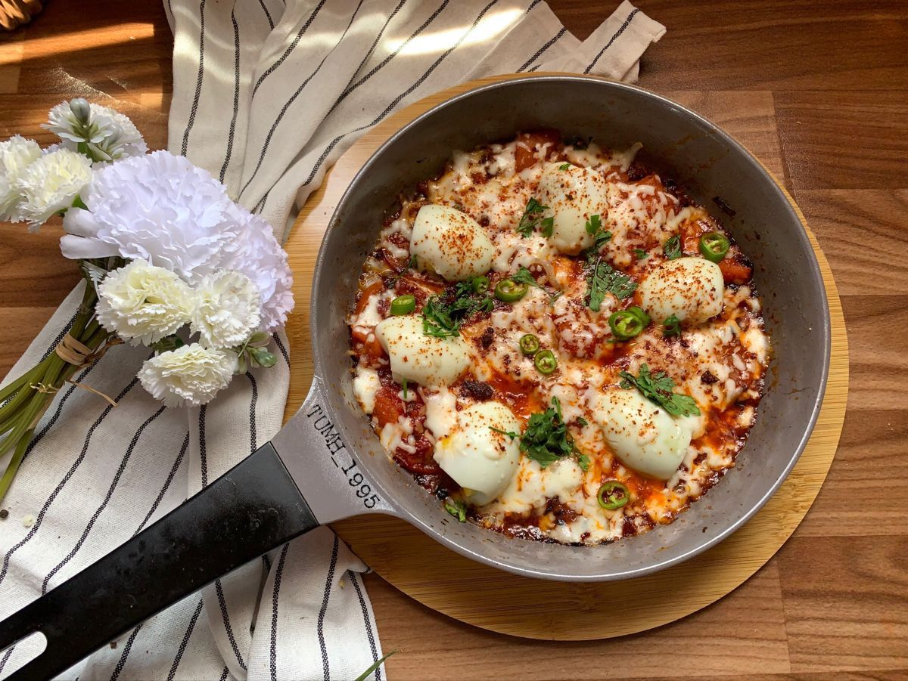

بيض على الطريقة التركية

متوسط
طبق إفطار تركي طازج وغني بالبروتين يتميز بزبادي يوناني كريمي ممزوج بالأعشاب، مغطى ببيض مسلوق طري ومرق الزبدة الحارة.
المقادير
الطريقة
- في وعاء، اخلطي الزبادي اليوناني مع الشبت المفروم والبقدونس المفروم والثوم المبشور والملح والعسل. اخلطي جيداً حتى يصبح الخليط ناعماً.
- وزعي خليط الزبادي بالتساوي في قاع طبق التقديم.
- اغلي قدراً من الماء. أضيفي البيض واتركيه يطهى لمدة 7 دقائق بالضبط للحصول على صفار سائل قليلاً.
- حضري حمام ماء مثلج. بمجرد نضج البيض، انقليه فوراً إلى الماء المثلج لوقف عملية الطهي.
- بمجرد أن يبرد، قشري البيض وقطعيه إلى أنصاف وضعيه فوق قاعدة الزبادي.
- في مقلاة صغيرة على نار متوسطة، ذوبي الزبدة. أضيفي رقائق الفلفل الأحمر والبابريكا، وقلبي لمدة دقيقة تقريباً حتى تظهر الرائحة وتتحول الزبدة إلى اللون الأحمر.
- صبي الزبدة المتبلة الدافئة فوق البيض والزبادي.
- زيني بالأعشاب الطازجة الإضافية وبذور السمسم حسب الرغبة.
- قدميه فوراً مع شرائح الأفوكادو وخبز الساوردو المحمص.
القيم الغذائية
المعلومات تقديرية للحصة الواحدة
892
سعرات
kcal
52
كربوهيدرات
g
63
دهون
g
34
بروتين
g